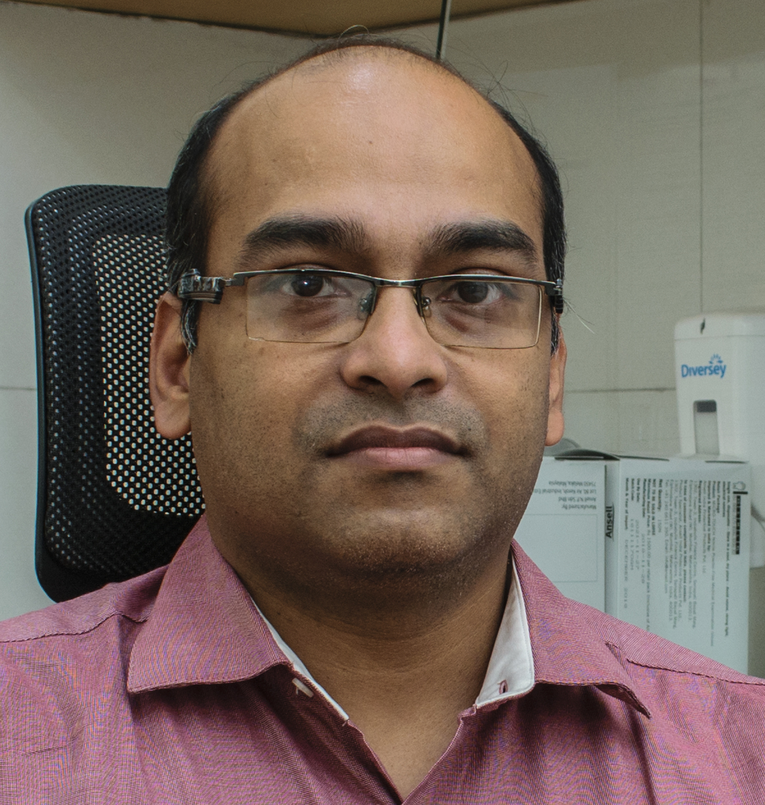
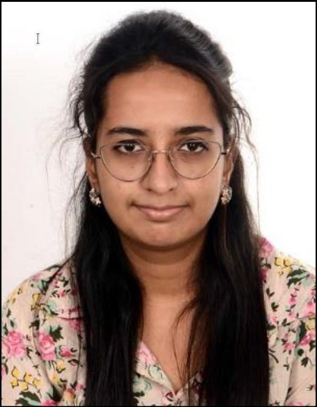

Course Faculty
Santam Chakraborty

Hi, I am Dr Santam Chakraborty and I will be the principal faculty for this course. I have been a Radiation oncologist and a clinical researcher for the past decade and have an active publication record which you can view at the Google Scholar page here. As a part of my scientific journey I continue to learn new statistical techniques and adopt them in my practice. I am also the prinicpal investigator of several academic clinical trials and can advice you regarding your study design if needed.
I have been using R for statistical analysis of my papers over the past decade and have learnt it like many others by trial and error along with lots of help from online sources and paper books. One of the most influential teaching in this regards has been the textbook called “Regression Modelling Strategies” by Professor Frank E Harrell, Jr. which has really shaped my views towards statistical analysis.
Learning R has not been easy by any means but has taught me more about statistical analysis and the scientific methodology than any GUI driven program ever could. I have previously tried teaching R online but have found that the online medium does not really lend itself to teaching coding well. Hence the idea of this workshop came to my mind and I am hoping to teach this for three to four times a year.
When I am not learning new data wrangling techniques I would be usually curling up with my favorite science fiction books at home usually with a box of candy.
Sougata Maity
Hi, I am Mr Sougata Maity and I will be the faculty for this course. I am a Data Imaging Scientist and currently working actively on India’s first image bank - CHAVI. My current focus is on developing tool sets that will allow us to enhance and augment this image bank in collaboration with our team members at IIT Kharagpur. I am also actively involved in developing and deploying deep learning based algorithms for various oncology tasks.
As a part of my career and educational journey I continue to learn coding, web development and statistical techniques and adopt them in my practice. I have been using R and Python for statistical analysis of projects as well as for data preparation and data cleaning over the last couple of years.
Oindrilla Roy Chowdhury

Hi, I am Ms Oindrilla Roy Chowdhury and I will be the faculty for this course. I am a Data Imaging Scientist and currently working actively on India’s first image bank - CHAVI. I am actively involved in the statistical analysis of several ongoing research projects at Tata Medical Center and involved in the development of prognostic and predictive models.
As a part of my career and educational journey I have worked as a Bio-statistician at CRS TMH and CRS ACTREC, Mumbai.